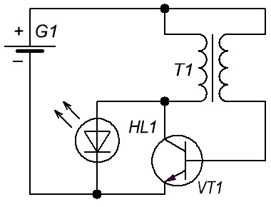
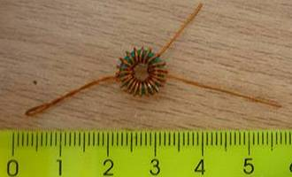
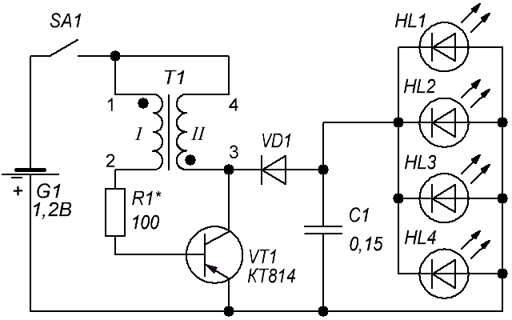
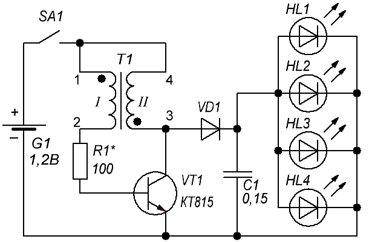

Светодиодный фонарь
Светодиод на схеме рис. 1 получает питание от блокинг-генератора. Блокинг–генератор представляет собой генератор кратковременных импульсов повторяющихся через довольно большие промежутки времени. Одним из достоинств блокинг - генераторов являются сравнительная простота, возможность подключения нагрузки через трансформатор, высокий КПД, подключения достаточно мощной нагрузки.

Рис. 1 - Схема блокинг-генератора
Детали:
- Транзистор можно использовать любой (n-p-n или p-n-p, например, КТ315Г).
- Резистор (нужно подбирать).
- Кольцо ферритовое (не очень большое).
- Диод высокочастотный с низким падением напряжения.
На ферритовое кольцо (например, из балласта люминесцентной лампы) намотаем 10 витков проводом 0,5-0,3 мм (можно и тоньше, но не удобно будет). Делаем петельку-отвод и намотаем еще 10 витков (рис. 2).

Рис. 2 - Трансформатор
Собираем блогинг-генератор по схеме (рис. 1). Транзистор можно взять КТ315. Можно также поставить ещё конденсатор параллельно с диодом, чтобы ярче светодиод светился.
Если светодиод не горит, поменяете полярность батарейки. Если это не поможет, проверьте правильность подключения светодиода и транзистора. Если все правильно и все равно не горит, значит неправильно намотан трансформатор.
Для получения более яркого фонаря дополняем схему (рис. 3 и 4). Диод VD1 и конденсатор С1 позволяют светодиоду засветиться ярче.

Рис. 3 - Дополненная схема блокинг-генератора с p-n-p-транзистором

Рис. 4 - Дополненная схема блокинг-генератора с n-p-n-транзистором
Для подбора резистора, вместо постоянного резистора ставим переменный (или подстроечный) на 1,5 кОм и начинаем изменять сопротивление. Нужно найти такое положение, где светодиод светит ярче и если увеличить сопротивление хоть чуть-чуть светодиод гаснет.
Источники
sdelaysam-svoimirukami.ru - Светодиодный фонарь от 1,5 В и ниже